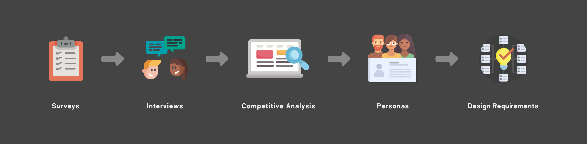
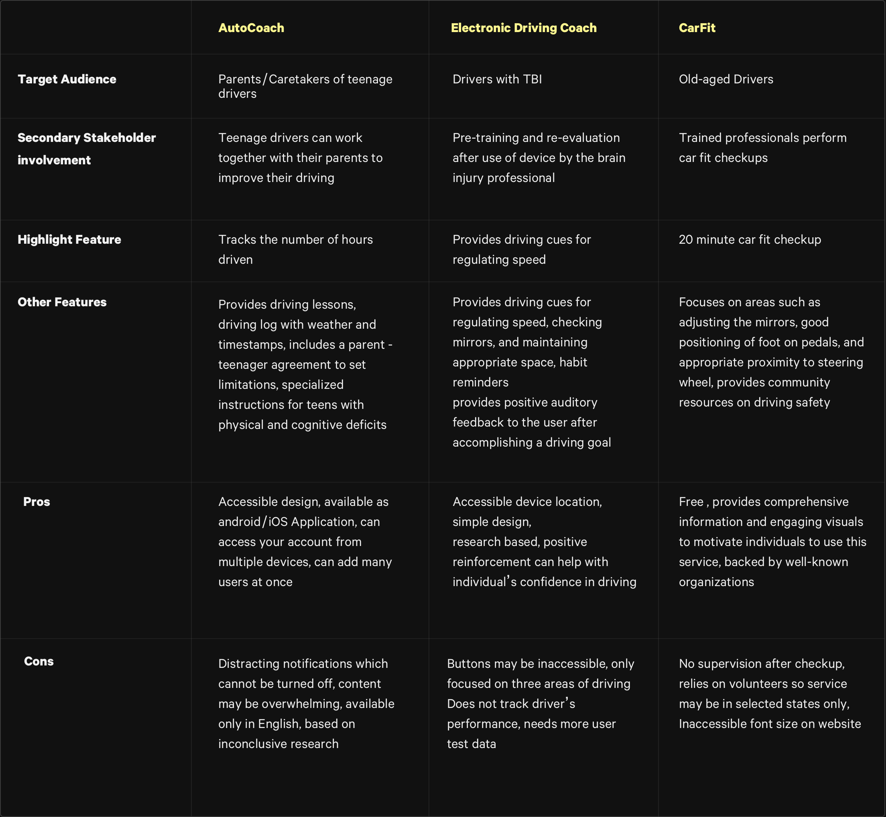

Traumawise
User-Centered Design
Introduction
As a part of the User-Centered Design course at University of Washington, this project dives into the intricacies of a user-centred procees: hypothesising a design rationale, validating the hypothesis through user research, using user stories and scenarios to inform sketches and ideation, and getting user feedback for low/high fidelity prototypes.
1. Design Rationale
The current state of car interfaces is increasingly digital - big bold touch screens that the user can interact with, voice command, seemless media transfer from phone to the car infotainment system. Despite these technological advancements, there have been few that address the executive functioning of the user. Returning to driving after a brain injury can be intimidating, especially when every interaction is digital. For this project we wanted to find out what are the main issues faced by TBI patients while driving, what kind of cues are they comfortable recieving, and how big of a role does a car interface play in their driving experience, which boils our design question to -
"How can we support brain injury survivors as they return to driving?"
2. User Research
Before begining with user research, it was essential to establish our stakeholders. Our primary stakeholders are traumatic brain injury (TBI) survivors who are returning to driving. Our secondary stakeholders are therapists, primarily Occupational Therapists and Speech-Language Pathologists, who support patients recovering from TBIs and friends, family members, and caregivers who accompany the primary stakeholder at different stages of their tasks.
2.1 Surveys
We created a survey with 32 questions targeting individuals with TBIs who are currently driving. The survey included the participant’s demographics, medical history, challenges with driving, driving habits, and their suggestions of what could improve their driving experience. There was a combination of short answer responses, long answer responses, and checkboxes, along with additional input for contact information so as to follow them up for interviews.
2.2 Interviews
The next step was following up with people who provided their contact information in the surveys for interviews. We were able to interview nine TBI Patients, understanding the details of their injury and its repercussions, asking them their personal inventory while driving, their pain points, and their initial impressions of our design approach. In addition, we also interviewed some of the professionals in the field like a Driving Rehabilitation Specialist, Occupational Therapist, and a Speech Language Pathologist to further gain insight into the intricacies of a brain injury and its effect on cognitive processes.
2.3 Competitive Product Analysis
We looked up existing tools or programs that addressed driving safety for individuals with cognitive impairments.
2.4 Research Findings
- Anxiety: This is a recurring issue with TBI survivors, however, they are not necessarily anxious about their skills as a driver. Some cannot articulate their source of their anxiety - being in a car is enough of a cause. Many cited memory and distractions as causes and often, anxiety led to fatigue or frustration.
- Memory: While their ability to drive is unaffected, some experienced forgetfulness as related to driving specifically (e.g. forgetting to check their blind spot or for traffic before making a right turn at a stop light); others forget generic tasks (e.g. an intended destination or purpose for being there)
- Distractability: For TBI survivors, anything can become a distraction, inside or outside of the car, moving or stationary. As a result, their reasons for distractions are highly individualized.
- Independence: When asked why driving was important, “independence” was repeatedly a top hit. This not only confirmed the second part of our design rationale but also helped us understand the conflict TBI survivors are experiencing as they re-enter their lives.
2.5 Design Requirements
Based on our research findings, we found out what requirements should the design satisfy, thereby also redefining the original design question to:
"How can we support traumatic brain injury survivors by reducing their cognitive load as they return to driving?"